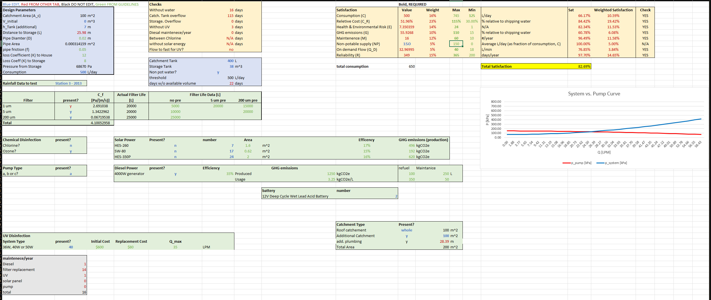

Project 03 / Systems modeling
Rainwater Harvester
An Excel model for an off-grid rainwater collection and treatment system.
GitHub documentation
- Contribution
- Six-person team
- Tools
- Excel / Simulation / Analysis
Project 03 / Systems modeling
An Excel model for an off-grid rainwater collection and treatment system.
GitHub documentation